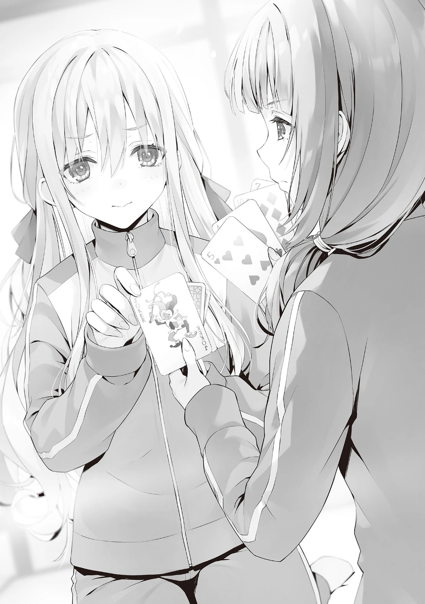

O zamanlar, Ryūen, Tokitō ve Hōsen arasında bir tartışmanın yaşandığını bilmiyordum.
Banyodan sonra lobideki kanepede oturuyordum, tavana sakin sakin bakıyordum.
Burası sabah Sakayanagi’nin oturduğu koltuğun hemen yanındaydı.
Hashimoto’nun istediği araştırma—sabah iletişime geçmiş ve kişisel olarak sonuçlardan memnun kalmıştım, ama henüz rapor etmemiştim, muhtemelen hâlâ benden bir sonuç bekliyordu.
İşim yokmuş gibi hissetmeme rağmen, en azından bir şeyler yapıyormuş gibi görünmeliyim diye düşündüm ve buraya geldim.
“Ah! Ayanokōji-kun! Hey, hikayemi dinleyebilir misin!?”
Ortak odasına dönmek üzere olan Satō, beni görünce rotasını değiştirdi ve hayal kırıklığıyla bana doğru geldi.
“Ne oldu?”
“Değişim toplantısı… değişim toplantısı. Gerçekten en üste çıkmayı hedefliyordum, bu yüzden…”
Hayal kırıklığını saklamaya çalışmadı, omuzları dramatik bir şekilde çökmüştü.
“Bir şey almak istemiştim, kendi çapımda elimden geleni yaptım. Ahh.”
Satō’nun grubu iki günde 12 maç oynadı, yedi galibiyet ve beş mağlubiyet aldı.
İyi gidiyorlardı ama üçüncü sırada bitirmek istiyorlarsa, işler onlar adına hiçte kolay değildi.
“İyi iş çıkarırsanız, ilk ona girme şansınız bayağı yüksek, değil mi?”
Sadece o sırayı elde etmekle 5000 puan kazanabilirlerdi.
Fena bir miktar değildi.
“Evet, kesinlikle hedefimiz bu. Ama bugün alınan sonuçlar nedeniyle grubun motivasyonu bayağı düştü, bu beni endişelendiriyor…”
Yüksek bir sıralamayı hedefliyorlarsa, morali bozulmuş hissetmeleri doğal olurdu.
Değişim toplantısında en üst ile en alt arasındaki fark aşırı fazlaydı.
Kaybeden gruplar 12 oyunda 11 veya 12 mağlubiyet almıştı ve kazanmaları imkansız görünüyordu.
Buna karşılık, galibiyetler, işleri ciddiye alan Nagumo grubu gibi gruplarda yoğunlaşmıştı.
Üçüncü sıradaki grup ile Satō’nun grubu arasındaki fark üç galibiyetti.
Oldukça kayda değer bir fark.
“Bugünkü son maç… pişman oldum…”
“Peki, son olarak hangi grupla karşılaştınız?”
Satō’nun hangi grupla mücadele ettiğini bilmediğim için sordum.
Satō biraz pişman bir yüz ifadesi göstererek söyledi:
“—Minamikawa-senpai’nin grubu ileydi.”
O, 3-C sınıfındandı.
Minamikawa grubunda Onodera’nın olduğunu hatırlıyorum.
Başından beri anlaşamayan Satō ve Onodera’nın iyi geçinmediği bilinen bir gerçekti.
Yanlış bir şey söylediklerini düşünmüşlerse, anlaşmazlıklarının nedeni muhtemelen bu olurdu.
Gözlemlediğim kadarıyla Satō ve Onodera sıradan kız öğrencilerdi.
Dışarıdan bakıldığında iyi anlaşmaları garip olmazdı, ama insan ilişkileri böyle işlemiyor.
Hala Onodera’dan hoşlanmıyor mu? Kolayca sorulabilir ama sormam gereken bir şey değildi.
“Bu pişmanlığı yarına taşımaktan başka çaren yok. Ne kadar çabalarsan, bir o kadar şansın olur.”
“…Evet.”
Konuyu değiştirdikten ve biraz konuştuktan sonra, Satō grubunun çağrısıyla ayrıldı.
Bundan sonra kayda değer bir şey elde edemeden, ortak odamıza döndüm.
“Kimse yok.”
Oda, hafif dağılmış bir futon dışında boştu.
Telefonumu açtığımda yaklaşık on dakika önce gelmiş Hashimoto’dan bir mesaj gördüm.
[Kızlar odasına gidiyorum, orada buluşalım.]
Araştırma talep eden biri için oldukça kaygısızdı.
Ama bir eğitim kampında karşı cinsin odasına gidip takılmak klasiklerden biri olabilir.
Dağılmış futonu toparladıktan sonra kızlar odasına gitmeye karar verdim.
Hashimoto’nun mesajını okuduktan yaklaşık beş dakika sonra kızların ortak odasına vardım.
Aynı bina, aynı düzen, aynı mobilya ve dekorasyonlar.
Bu doğal bir durumdu ama erkeklerin kullandığı ortak odadan gerçekten fark yoktu.
Tek fark karşı cinsin varlığıydı.
Odamızdan ne daha fazla ne daha az olmasına rağmen, neden bu kadar farklı görünüyor?
Bunu iyi ya da kötü bir alan olarak algılamanız, tamamen kişisel algınıza bağlıydı.
Birinci sınıf öğrencilerinden üçüncü sınıftaki Kiryūin’e kadar tüm kızlar oradaydı.
Birinci sınıf erkeklerinin hepsi gergin ama bir o kadar da mutluydu.
Yamamura ise biraz keyifsiz görünüyordu, ifadesi her zamankinden daha karanlıktı.
Değişim toplantısında hiçbir rolü yoktu ve grupta zamanını nasıl geçirdiği hakkında en az şey bildiğim kişiydi.
“Hey, geldin.”
“Sen çağırdın.”
Erkekler düşündüğümden daha çok eğleniyor gibiydi.
Ama kızların enerjisi beklediğimden daha düşüktü.
Yani eğleniyor gibi görünmüyorlardı.
Bu iki bilgi bir anda zihnime yerleşti.
Hashimoto muhtemelen erkekleri biraz zorlayarak kızların odasına getirmişti.
“Biraz sıkışıp kaldık. Ortamı canlandıracak bir şeyin var mı? Odanın havası biraz ağır değil mi? Hadi bir espri falan patlat da dağılsın.”
“Öyle bir şakam yok, ama eğlenmelik bir fikrim var.”
Eşofmanın cebine sıkıştırdığım bir kutuyu çıkardım ve ona gösterdim.
“Oh, güzelmiş. Oldukça düşüncelisin.”
Deneyim etkinlikleri listesinde kart oyunları da olduğundan, bolca hazırlanmış ve hemen elde edilebiliyordu.
Hashimoto bunu memnuniyetle karşıladı, elini uzatıp kutuyu istedi.
Aldığında kutuyu açtı ve içinden bir deste kart çıkardı.
“İskambil klasiklerin klasiğidir, değil mi Ayanokōji?”
Telefonuna bakarak oturan Kiryūin ayağa kalkmadan bana seslendi.
“Bir keresinde sarışın bir senpai bana iskambilin kampların olmazsa olmazı olduğunu söylemişti.”
“Ha? Yoksa Nagumo mu?”
Sandalyeye yaslanarak ilgileniyormuş gibi sordu.
Onaylamak için başımı sallayınca Kiryūin biraz güldü, bu gerçeği eğlenceli bulmuş gibiydi.
“O adam da böyle klişe şeyler yapıyor demek.”
“Ayrıca bugün grubumuz kart oyununda ilk kez kaybetti, bu yüzden biraz da kendimi sorguluyorum.”
“İskambil, ha?”
Kiryūin’in yanında pencereden bakan Morishita, bir şey fark etmiş gibi mırıldandı.
Sonra tatamiye elleriyle destek olarak sürüne sürüne, seiza pozisyonunda yaklaştı.
“Hadi oynayalım. Sonda kimin elinde Joker kalırsa kaybeder.”
“Oldukça hevesli görünüyorsun… Kart oyunlarını seviyor musun?”
“Seviyor muyum sevmiyor muyum bilemem. Hiç oynamadım.”
“Hiç mi oynamadın? Hâlâ taş devrinden kalma insanlar var demek?”
Hashimoto şaşkınlıkla gözlerini açtı.
“Kart oynayacak değer biri yoktu.”
Yani şimdiye kadar bunun için hiç arkadaşı olmamış mıydı?
“Bir dakika. Bu garip değil mi? Kendine kart oyunlarında beş puan vermemiş miydin?”
Gerçekten de Morishita kart oyunlarında kendine en yüksek puan olan beşi vermişti.
“Deneyimsiz olsam bile yeteneğim sayesinde başarılı olacağımı düşündüm. Sonuçta, bu iyi miyim değil miyim sorusu değildi, özgüvenimi birden beşe kadar değerlendirme sorusuydu. Yani beş.”
Göğsünü şişirerek kendinden emin bir şekilde cevapladı.
Kesinlikle kendine güveniyordu.
“Ama bugünkü oyunda çağrılmamıştın.”
Neden seçilmediğini yalnızca lider Kiryūin biliordu.
“Doğru. Peki neden beni seçmedin?”
“Kart oyununda bu kadar özgüvenli olduğunu söylemen şüpheli değil mi? O yüzden seni dışarıda bıraktım.”
Anlaşılan bu kararı değerlendirme listesindeki puanına bakarak vermişti.
Onun izlenimi doğruydu.
“Neyse boşverin onu. Hadi oynayalım. Lütfen kartları hızlıca dağıt, Ayanokōji Kiyotaka.”
Gerçekten oynamak istediği belliydi, bu yüzden getirdiğim için pişman olmadım.
Ama herkes aynı anda oynayamazdı, peki ne yapılmalıydı?
“Şöyle yapalım: Dört kişi bir oyun. Önce sadece erkekler, sonra sadece kızlar, sonra da karışık bir oyun.”
Benim kararsızlığımı fark eden Hashimoto oyuncuları düzenlemek için bir öneride bulundu.
“Fena fikir değil. Hadi öyle yapalım.”
Morishita zaten hevesliydi, en ufak bir isteksizlik göstermiyordu.
Sessiz duran Tsubaki’nin oynamak istemeyeceğini düşünmüştüm ama görünüşe göre diğer birinci sınıflar, Tsubaki dahil, şaşırtıcı derecede istekliydi.
“Sen de gelsene, Yamamura?”
Uzakta tek başına oturan Yamamura’ya seslendim ama o başını yana salladı.
“Şey… ben… izlerim.”
“Emin misin?”
Katılmaya hiç niyeti olmayan Yamamura, hafifçe başını eğerek reddetti.
“Oynamak istemediğini söyleyen birini dahil etmeye gerek yok. Hadi başlayalım.”
Morishita’nın enerjik baskısıyla kızların kart oyunu maçı hemen başladı.
“Bu değişim toplantısı, iyi bir değişim toplantısı.”
(Bu şekilde konuşması bilinçli; tarzı bu.)
“Ucuz bir değerlendirme. Sırf kart oynayabiliyorsun diye tatmin mi oldun?”
Bağdaş kurarak oturan Hashimoto, dirseğini dizine dayayıp mırıldandı.
“Ben tatmin oldu ama lütfen kartlarıma arkadan bakma.”
“Elini açık etmem.”
“Hashimoto Masayoshi’nin ne zaman ihanet edeceği belli olmaz.”
Bunu söylerken elini vücuduyla sakladı.
Hashimoto buruk bir gülümseme takındı ama gerçekten de bir hain gibiydi…
“Ama artık yavaş yavaş netleşiyor.”
Morishita ilk kez oynuyordu ama sadece eğlenmekle kalmıyor, aynı zamanda kendi analizini de yapıyordu.
“Bu oyunda birkaç strateji var.”
Bunu derken bir elinde tek bir kart tutuyor, diğer kartlarından ayrı ve özellikle göze çarpacak şekilde gösteriyordu.
“Buyur, Shiina Hiyori. Çekinmeden istediğin kartı al.”
“Nedense… o tek karta biraz takıldım.”
“Öyle mi? Bu, benim geliştirdiğim ileri seviye bir strateji.”
Bu arada, Hashimoto artık göremiyordu ama benim bulunduğum yerden Morishita’nın elini net bir şekilde görebiliyordum.
O tek ayrı duran kart büyük ihtimalle Joker’di.
Çok şüpheli olduğu için Joker olamazmış gibi görünmesi… işte amacı da buydu.
Stratejik açıdan bakınca kötü bir hamle sayılmazdı.
Kanıtlanabilir bir olasılık artışı yoktu ama karşı tarafta yeterince psikolojik etki yaratıyordu.
“Acaba o mu?” diye düşündürmek için fazlasıyla yeterliydi.
“Ne yapsam…?”
Şüphelenen Hiyori, Morishita’nın sağ elindeki dört karta yönelmek istedi ama parmakları duraksadı.
Sol elindeki tek karta takılıp kalmıştı.
“Lütfen istediğin gibi seç.”
Morishita’nın duygusuzluğu ve kişiliği, mükemmel bir dikkat dağıtma aracı olmuştu.
Uzun bir düşünmenin ardından Hiyori büyülenmiş gibi o tek karta yöneldi.
Kartı çekti, çevirdi ve seçtiği kartın Joker olduğunu görünce hayal kırıklığına uğradı.

Herkes, onun yüz ifadesinden Joker’i kimin çektiğini anlamış olmalıydı.
“Yüzüne bu kadar belli edersen hâlâ öğrenecek çok şeyin var.”
Bundan sonra birkaç tur boyunca oyun sessizlik içinde devam etti.
İlk elenen birinci sınıf öğrencisi Eikura oldu, ardından Hatsukawa.
Joker’i erkenden elden çıkarmayı başaran Morishita ise sonraki kart eşleşmelerinde iki birinci sınıfa kaybetti ve finalde Hiyori’yle baş başa kaldı.
Böylece sahne şu hale geldi: Hiyori’nin elinde iki kart, Morishita’nın elinde tek kart.
“Buyur, Morishita-san.”
Hiyori aynı şekilde iki kartını uzattı.
Morishita dikkatle bakarak sağdaki kartı parmak uçlarıyla tuttu.
Ama hemen çekmedi; önce Hiyori’ye bir soru yöneltti.
“Bu mu?”
“…Ne?”
“Bunun Joker olmadığını düşündüm.”
“Ona cevap veremem.”
“Bence Joker bu.”
“Öyle mi… o zaman ondan kaçınmak isteyebilirsin. Karşıdaki karta geçmek ister misin?”
“Gerçekten mi? Kaybedeceksin biliyorsun?”
“Ama ben aslında Joker’in hangisi olduğunu bilmiyorum.”
“Safsın, Shiina Hiyori. Gizem çoktan çözüldü.”
Morishita tuttuğu kartı bıraktı, solundakini kavrayıp hızla çekti.
Gösterdiği kart… kupa beşlisiydi.
“Ben kazandım!”
“Eh, kaybettim.”
Hiyori kaybetmiş olsa da eğleniyor gibiydi, ama yüzünde yine de biraz hayal kırıklığı vardı.
Öte yandan Morishita, kazanma arzusuyla tamamen sürüklenmiş gibiydi.
Ardından erkekler arasında bir oyun oynandı, sonrasında da kız ve erkeklerin karıştığı bir oyun.
“Hadi sıradaki oyuna geçelim! Bir sonraki oyuna!”
Morishita hâlâ oynamak istiyordu, ama ben aklımdaki bir endişeyi dile getirdim.
“Artık Yamamura da katılsa iyi olmaz mı?”
“…Hayır, ben… iyiyim…”
Bizi baştan beri izliyordu ama bakışları oyuna hiç düşmemişti.
Dikkati dağınık, enerjisiz görünüyordu.
Kart oyununun moralini düzelteceğini ummuştum ama fazla beklenti olmuş olmalıydı.
“Yamamura-san, bize katılmaz mısın? Eğlenceli.”
O sırada Hiyori yanına yaklaştı ve nazikçe davet etti.
“Ama…”
“Hadi, lütfen katıl.”
Hiyori’nin yumuşak tavırlarına karşı koyamayan Yamamura, isteksizce oyuna dahil oldu.
Ama oyun başlar başlamaz beklenmedik sorunlar çıktı.
“Şey… sıra bende…”
“Ah, pardon Yamashita-senpai. Buyur, çek.”
Yanındaki öğrenci neredeyse onu atlayacakken, Yamamura aceleyle kartlarını uzattı.
Adını yanlış söylediler ama düzeltme zahmetine bile girmedi.
Hepimiz bir çember halinde oturmamıza rağmen kart çeken öğrenci Yamamura’yı yok saymıştı.
Belki de bu yüzden kart oyununa girmekten kaçınıyordu.
Tek bir hata gözden kaçabilirdi ama üst üste olunca, benim gibi kenardan izleyen biri için bile fark edilir hale gelmişti.
Acaba Yamamura’nın varlığı gerçekten bu kadar sönük müydü?
Onun iz sürme yeteneğini uzun süredir biliyordum, ama çıplak gözle bakarken bile bu kadar fark edilmeyecek biri olması garipti.
Fakat bunun sebebi benim onu bilinçli olarak fark etmeye çalışmam mıydı, yoksa diğerlerinin hiç dikkat etmemesi mi, emin değildim.
Bir dahaki fırsatta birine bunu sormaya karar verdim.